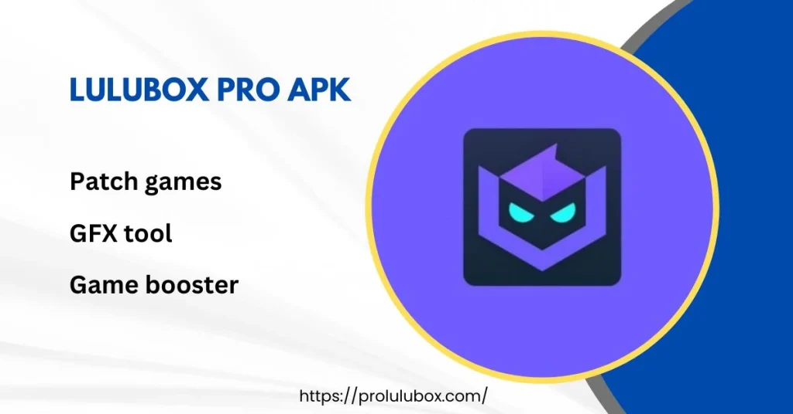

When it comes to mobile gaming, nothing gets a player more excited than unlocking new features, skins, or powers. It’s like finding a hidden treasure chest in the middle of a game level that has everything you didn’t know you needed. Enter LuluBox Pro, an app that promises to do just that! In this article, we’re going to dive deep into what LuluBox Pro is, what it does, and how it might just be the secret weapon you’ve been looking for in your gaming journey. And hey, we'll keep it light—no need to get too serious when we’re talking about fun stuff, right?
Before we go too far, let’s get one thing straight: LuluBox Pro is like that friend who always knows the cheat codes, but better! LuluBox Pro is an app designed to help gamers unlock various features, skins, and enhancements for their favorite mobile games. It’s like a toolbox—but for gamers. Whether you’re tired of staring at the same boring game skin, or you need an extra boost to power through those levels, LuluBox Pro is your go-to app.
But wait, there’s more! LuluBox Pro isn't just about gaming skins. It’s like a Swiss Army knife of apps—multi-purpose, and packed with different tools that cater to your mobile gaming experience.
Okay, let’s break this down in simple terms. LuluBox Pro works by creating a platform where gamers can access free game skins, plug-ins, and various enhancements without actually spending any real money. It’s not some magic spell (though it may feel like it), but it basically creates a space where game modifications can be applied without directly altering the game itself. This makes it both effective and pretty safe to use.
Think of it like this: Imagine you're trying to bake a cake, but you don’t have all the ingredients. LuluBox Pro is like the magical kitchen that has all the sprinkles, icing, and decorations you could possibly want—without making you pay for them. So you end up with an even more delicious cake, without having to go shopping.
There are a bunch of reasons why gamers love LuluBox Pro, but let’s start with the obvious:
We get it—you’re probably thinking, “This sounds too good to be true. What’s the catch?” Well, here’s the thing: LuluBox Pro is generally considered safe. It doesn’t require rooting your phone, which is a huge relief because no one wants to mess with their device’s warranty. Plus, since LuluBox Pro works as an overlay and doesn’t directly modify the games, the risks are relatively low.
That said, it’s always a good idea to be cautious when downloading any third-party app. Make sure you’re getting it from a reputable source and keep your device’s security settings updated. The last thing you want is a virus to crash your game right in the middle of a winning streak!
Alright, so now that you’re sold on the idea of LuluBox Pro, let’s talk about how you can get it.
Now for the million-dollar question: What games can you use with LuluBox Pro? Lucky for you, it supports a wide range of popular mobile games, including:
And the list doesn’t stop there. LuluBox Pro is constantly updating its catalog, adding new games and features to keep you ahead of the curve.
While LuluBox Pro offers plenty of advantages, there’s always a bit of caution to be exercised. For one, many game developers frown upon the use of third-party apps for altering in-game experiences. Although LuluBox Pro is safe for the most part, there’s always a chance your game account could be flagged or even banned. You didn’t hear that from me, though!
In addition, some games may not support LuluBox Pro, or certain features may be restricted in certain regions. So, if your favorite game isn’t playing nice with LuluBox Pro, it’s not the app’s fault—it’s just a bit of bad luck.
In short, LuluBox Pro is like the ultimate cheat sheet for mobile gamers. It offers a range of features like free skins, game enhancements, and even social media downloads, making it a versatile app. Whether you’re looking to spice up your gaming experience with new skins or simply streamline your gameplay, LuluBox Pro is a great option to consider.
Just remember to download it from a trusted source, use it wisely, and don’t be too upset if your game doesn’t quite agree with it. After all, nothing in life is perfect—not even an app that gives you free skins!
So, what are you waiting for? Download LuluBox Pro today and start leveling up your mobile gaming experience!